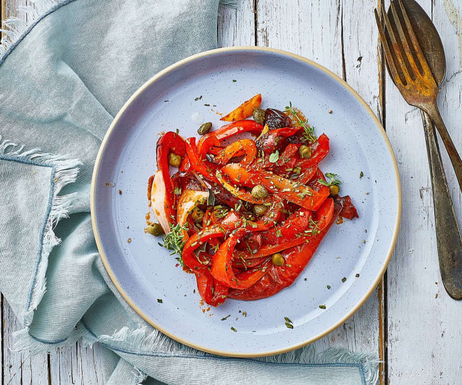

Even though each Italian region has its own variations of the same dish, the balance of vegetables in this rustic side dish always leans toward bell peppers, or peperoni in Italian – hence the name. Other ingredients may include eggplants, tomatoes, onions, zucchini, and sometimes even potatoes.
Meal prep time : 1 hour 35 minutes
Servings : 4-8